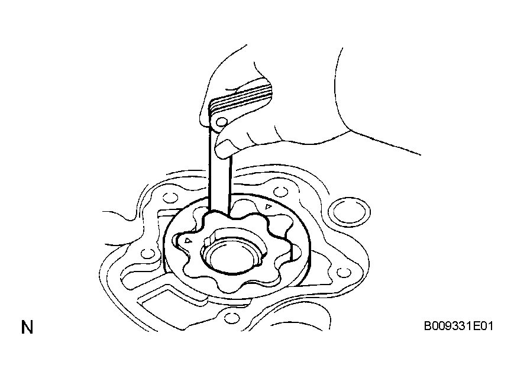
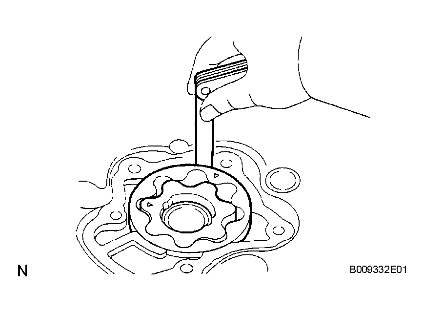
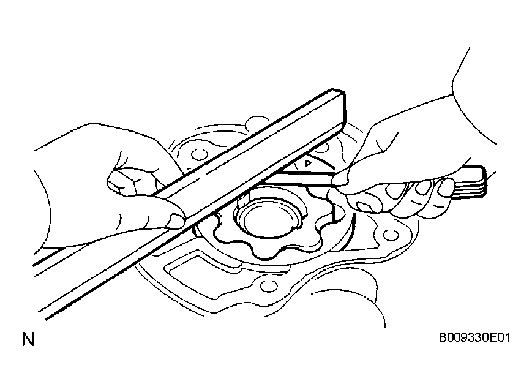

Oil Pump: Inspection
- INSPECT OIL PUMP RELIEF VALVE
- Coat the valve with engine oil and check that it falls smoothly into the valve hole by its own weight.
- INSPECT OIL PUMP
- Inspect the oil pump rotor set.
- Coat the oil pump rotor set with engine oil and place it into the oil pump body. Check that the rotors revolve smoothly.
If the condition is not as specified, replace the timing chain cover (oil pump).
- Coat the oil pump rotor set with engine oil and place it into the oil pump body. Check that the rotors revolve smoothly.
- Inspect the rotor tip clearance.
- Using a feeler gauge, measure the clearance between the drive and driven rotor tips.

Courtesy of © TOYOTA, LICENSE AGREEMENT TMS1002Standard tip clearance: 0.060 to 0.180 mm (0.0024 to 0.0071 in.)
Maximum tip clearance: 0.28 mm (0.0110 in.)
If the tip clearance is greater than the maximum, replace the timing chain cover (oil pump).
- Using a feeler gauge, measure the clearance between the drive and driven rotor tips.
- Inspect the rotor body clearance.
- Using a feeler gauge, measure the clearance between the driven rotor and the oil pump body.

Courtesy of © TOYOTA, LICENSE AGREEMENT TMS1002Standard body clearance: 0.250 to 0.325 mm (0.0098 to 0.0128 in.)
Maximum body clearance: 0.425 mm (0.0167 in.)
If the body clearance is greater than the maximum, replace the timing chain cover (oil pump).
- Using a feeler gauge, measure the clearance between the driven rotor and the oil pump body.
- Inspect the rotor side clearance.
- Using a feeler gauge and precision straightedge, measure the clearance between the rotors and precision straightedge.

Courtesy of © TOYOTA, LICENSE AGREEMENT TMS1002Standard side clearance: 0.03 to 0.09 mm (0.0012 to 0.0035 in.)
Maximum side clearance: 0.15 mm (0.0059 in.)
If the side clearance is greater than the maximum, replace the timing chain cover (oil pump).
- Using a feeler gauge and precision straightedge, measure the clearance between the rotors and precision straightedge.
- Inspect the oil pump rotor set.